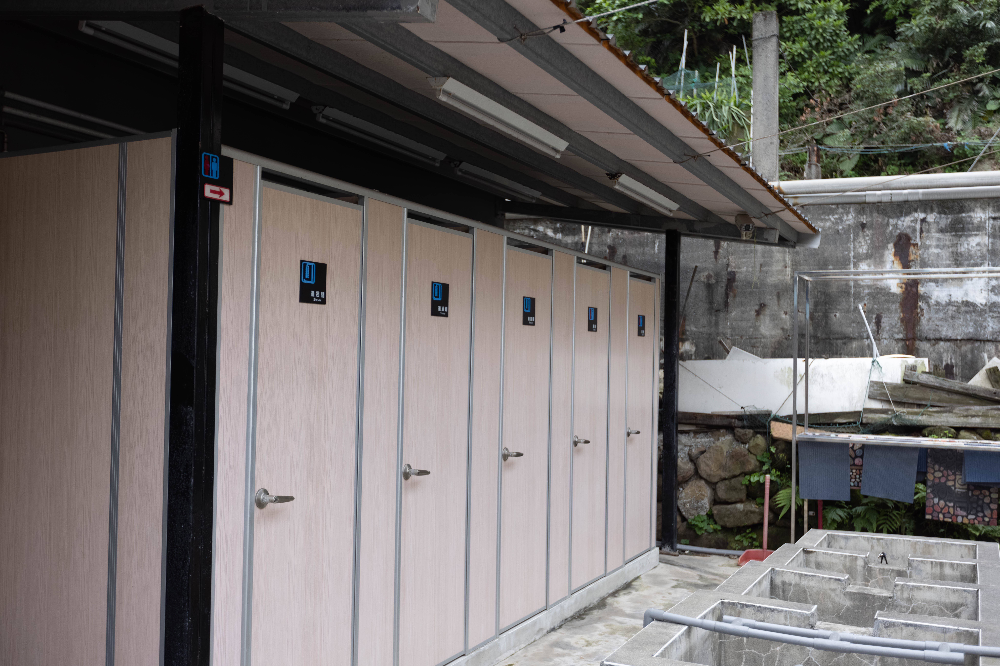
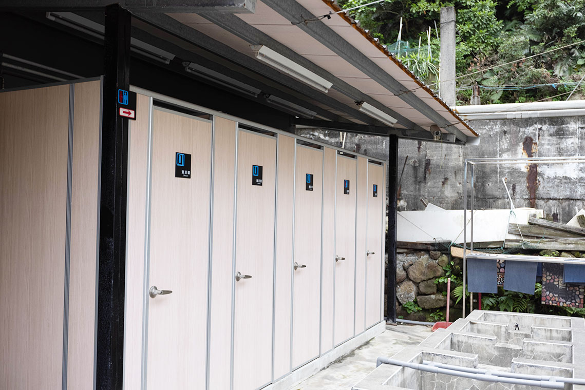
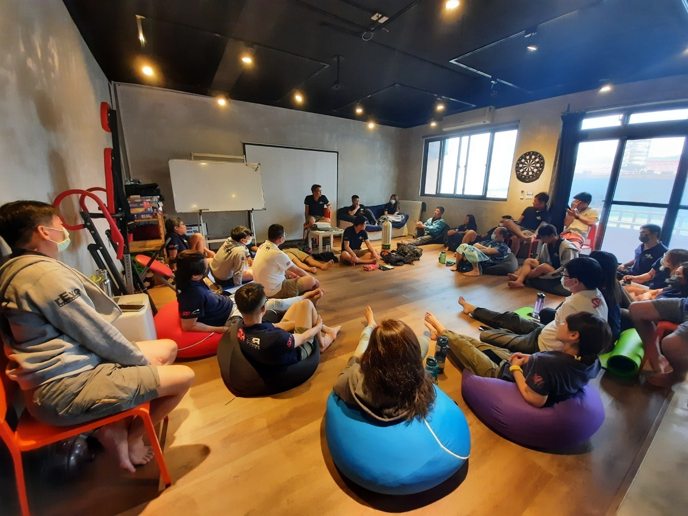
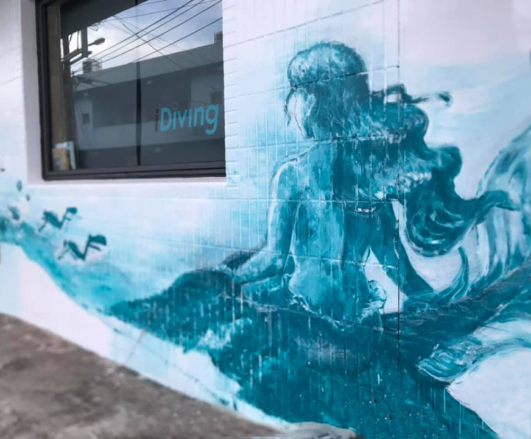
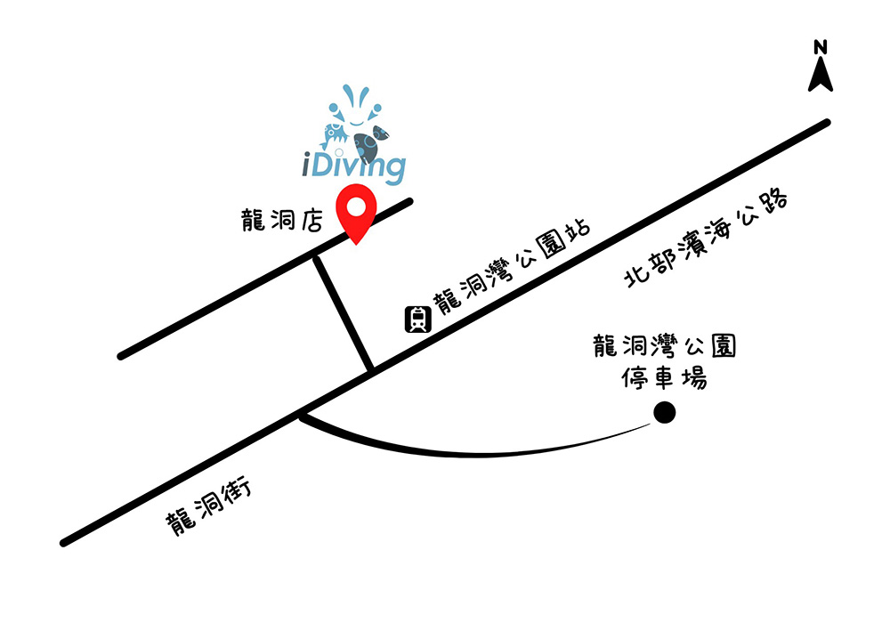

iDiving 龍洞店
位於新北市貢寮區的龍洞店，從台北出發只需要車程
45~60分鐘，龍洞沿岸有多處的天然屏障地形，
形成安全穩定的海域，是東北角沿海潛水聖地！
龍洞店一樓設有獨立盥洗間、裝備清洗池、置物區
相機桌、電池充電站、用餐區、電視等
二樓提供瑜珈墊、懶骨頭、桌遊、Switch、
飛鏢等交誼區，提供潛水員們舒適的環境，
享受潛水完悠閒的時光
設施服務

獨立裝備籃、置物區提供擺放裝備與盥洗衣物

一樓設有五間淋浴間、兩間廁所、六個裝備清洗池

二樓遊戲、交誼區，還有海景戶外陽台

獨特手繪東北角明星生物與潛水員壁畫
交通指南

電話：(02)2491-1639
地址： 新北市貢寮區龍洞街66-1號
（導航路徑請設定 iDiving龍洞，濱海公路/台2縣，
到龍洞灣公園對面巷子進去就抵達）
龍洞店街景：https://reurl.cc/KrM5Zq（新味小吃左側巷子進入）
iDiving 龍洞店：https://reurl.cc/GbAOx3
營業時間：
4月-10月 星期六至星期日 08:00~17:00
*停車資訊：龍洞灣海洋公園大型停車場、濱海公路兩側路邊停車
*搭乘大眾運輸工具，乘車資訊：
*基隆火車站乘車
-基隆客運791(國家新城-福隆)→龍洞灣公園站下車
*瑞芳火車站乘車
-基隆客運台灣好行黃金福隆線856(瑞芳火車站-福隆遊客中心)
→龍洞灣公園站下車
https://www.taiwantrip.com.tw/line/32?x=1&y=4
-基隆客運886(瑞芳-和美國小)→龍洞灣公園站下車
*台北火車站乘車
-國光客運1811(台北火車站-羅東) 或
1812(台北火車站-南方澳)→龍洞公園站下車。
http://www.kingbus.com.tw/ticketPriceResult.php?sid=116
平日可至
*貢寮火車站
-新巴士F837(貢寮火車站-鼻頭里停車場) 或
F839(貢寮火車站-鼻頭角)→龍洞灣公園站下車。
https://ebus.gov.taipei/EBus/VsSimpleMap?rid=16971&sec=0#